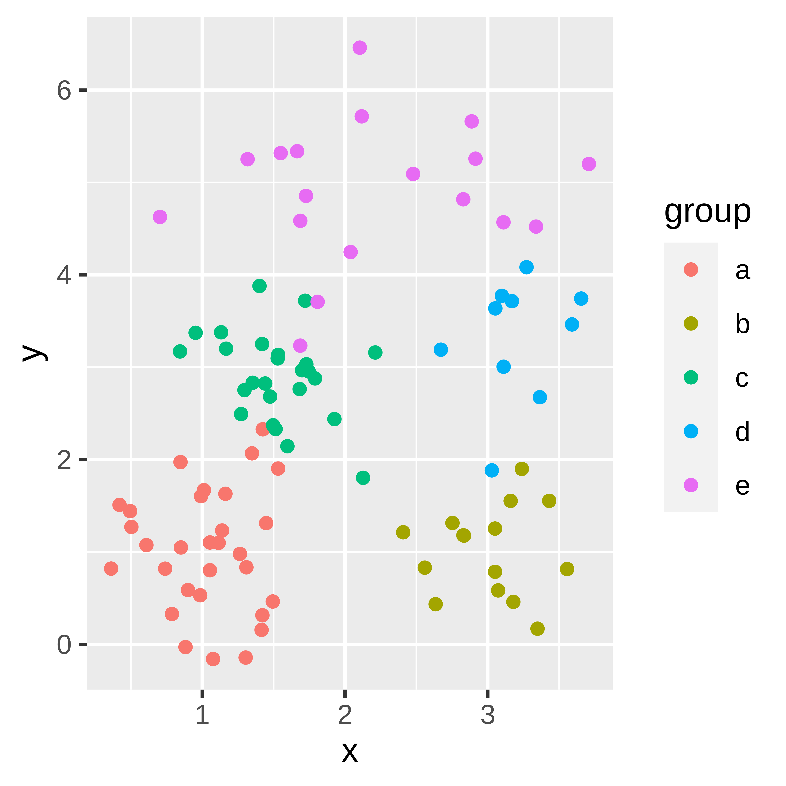
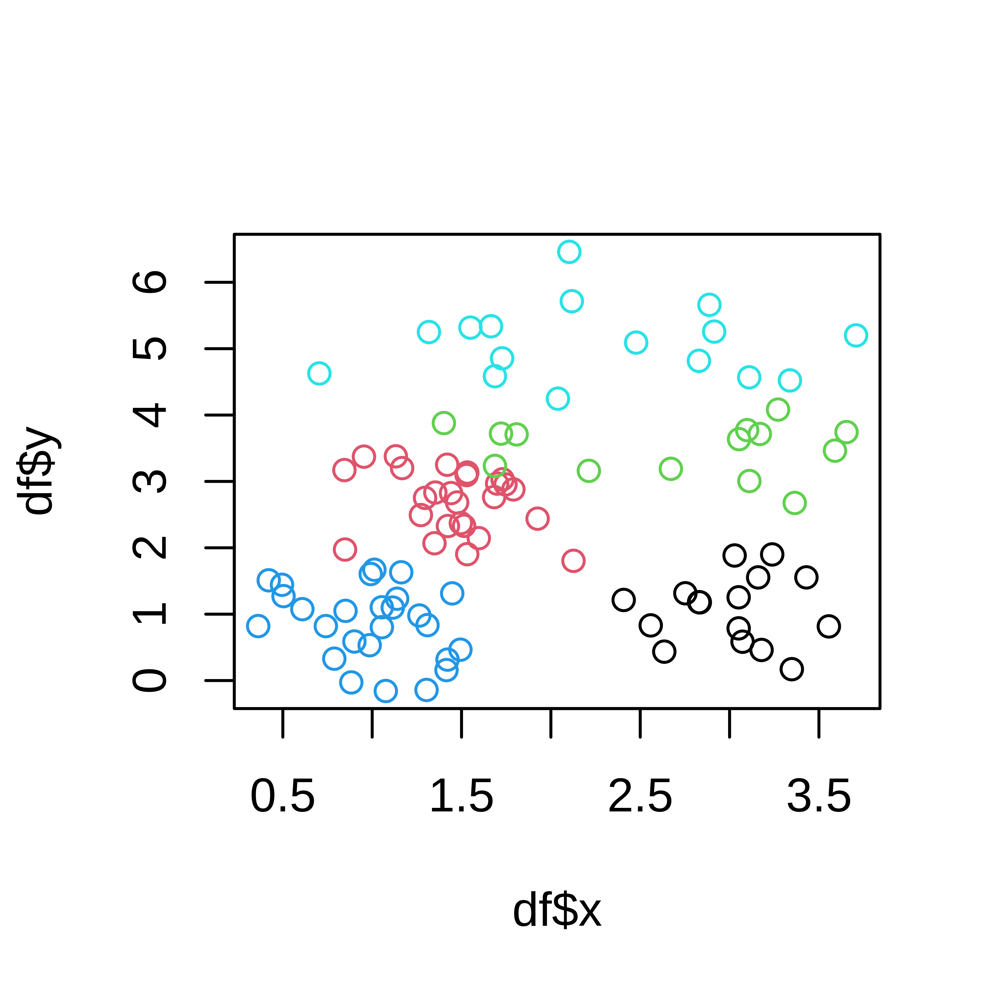
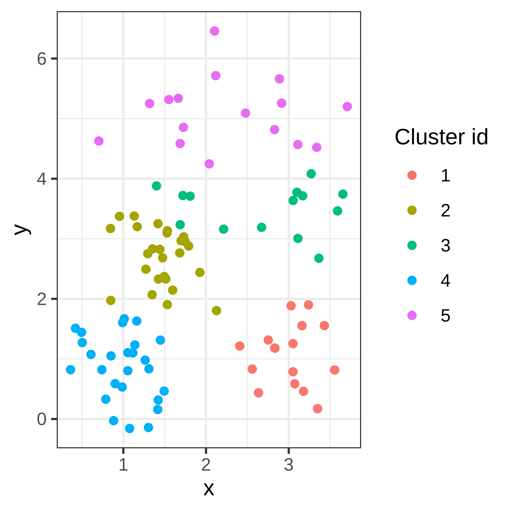
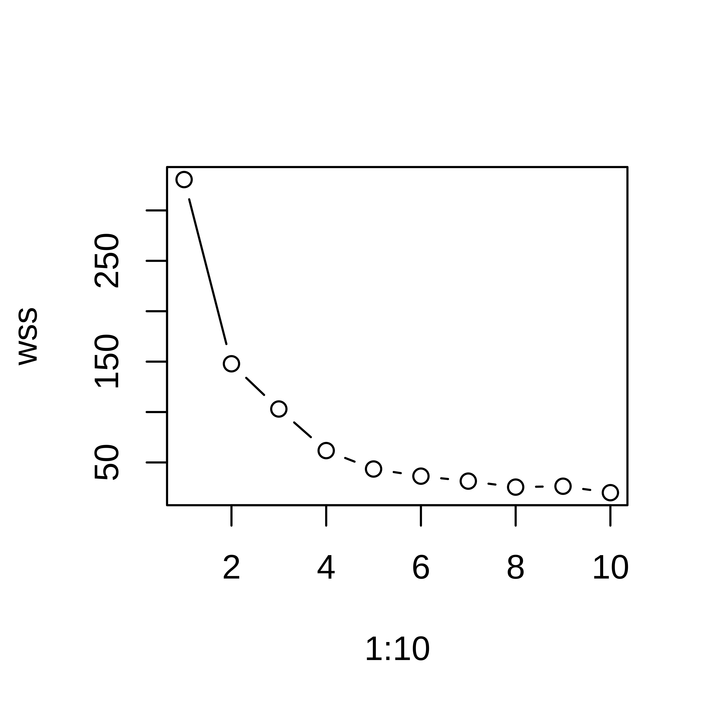
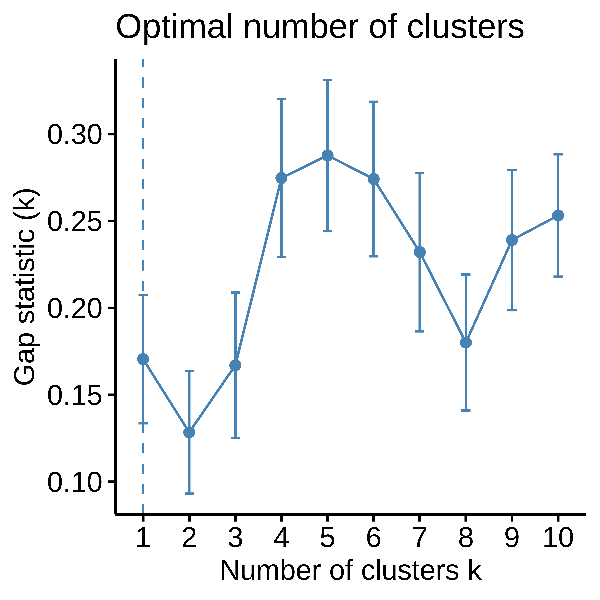
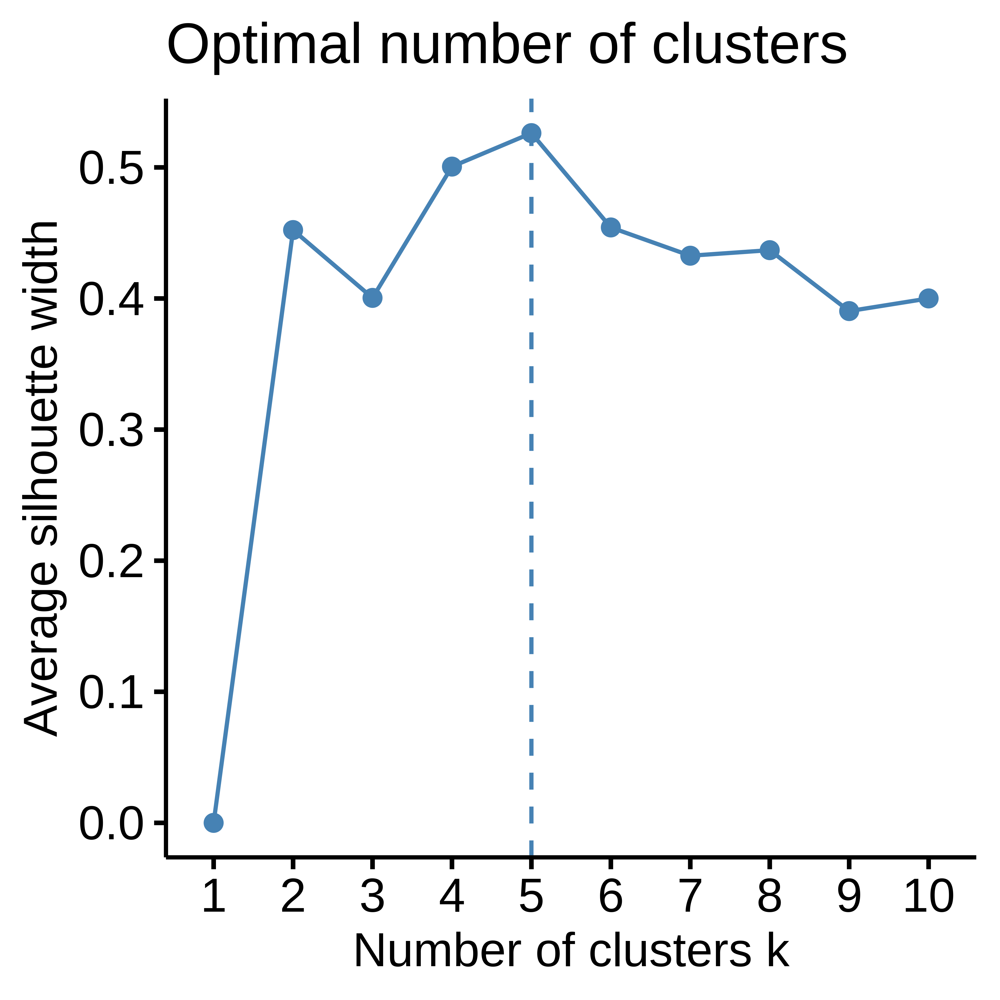

Exercises: Clustering
Exercise 4.1
Based on a two dimensional data set in the below figure, you will investigate K-means clustering.

Figure 4.3: A two dimensional data set of five clusters.
Download the two dimensional data set.
- Try to cluster the data using the k-means algorithm (function
kmeansin R). Use Forgy’s method for initialization and select a value for \(k\). - Plot the data and color by cluster id
- Run the same analysis again, do you get the same results? (You can compare two vectors of class identities using the function
table.) - By setting the argument
nstartto 4 the algorithm will automatically try four different (random) starting points. - Try different values for \(k\), run the k-means algorithm and collect the WSS (‘tot.withinss’). Plot WSS vs k. Thw WSS is always decreasing as k increases, but the curve can still give you a hint of which \(k\) to choose. The Elbow method for selecting \(k\) is to look at this curve and choose the \(k\) that you find at the bend of the curve, at the ‘elbow’. Which \(k\) would you pick based on this?
- Download the R-package
factoextraand use the functionfviz_nbclustto compute gap statistic and silhouette width and choose optimal \(k\).
Exercise 4.2 The NCI60 data set consists of gene expression values for 6830 genes for 64 cell lines.
Using this data set investigate a few hierarchical clustering distances and linkage methods.The data can be downloaded in R using the following command
nci.data <- read.table(url("https://web.stanford.edu/~hastie/ElemStatLearn/datasets/nci.data.csv"), sep=",",row.names=1,header=TRUE)
nci.label <-scan(url("https://web.stanford.edu/~hastie/ElemStatLearn/datasets/nci.label"),what="")- What is the size of the data matrix? Do every column represent a gene or a cell line?
- Compute the Euclidean distance between cell lines.
This can be accomplished using the function
dist. Read the help text?dist. This function computes the distance between rows of the input data matrix. If the rows represent cell lines, you can rundist(nci.data), but if your cell lines are represented by columns you need to transpose the data matrix firstt(nci.data). - Cluster the cell lines using complete linkage hierarchical clustering, use the function
hclust. - Plot the result! (If you read the help text about
hclustyou should know how to plot)- Try changing the labels to something more informative (such as
label=nci.label). - Investigate the argument
hang, what happens if you set it to -1?
- Try changing the labels to something more informative (such as
- Try the linkage methods “single”, “average” and “ward.D” in addition to “complete”. Compare the results. Which method is ‘best’?
Pick the tree resulting from the method you think is ‘best’. How many clusters are there?
You can cut the tree on any level to get between 1 and 64 clusters. The function cutree either on a specific height (dissimilarity) or to get a specific number of clusters.
Solutions
First read the data
- Try to cluster the data using the k-means algorithm (function
kmeansin R). Use Forgy’s method for initialization and select a value for \(k\).
## Warning: did not converge in 10 iterations- Plot the data and color by cluster id

- Run the same analysis again, do you get the same results? (You can compare two vectors of class identities using the function
table.)
##
## 1 2 3 4 5
## 1 0 16 0 0 0
## 2 0 1 22 3 0
## 3 0 1 7 0 6
## 4 9 0 0 17 0
## 5 0 0 0 0 16- By setting the argument
nstartto 4 the algorithm will automatically try four different (random) starting points. Try this out and compare how stable two runs are.
## Warning: did not converge in 10 iterations##
## 1 2 3 4 5
## 1 17 0 0 0 0
## 2 0 0 0 1 13
## 3 0 0 26 0 0
## 4 0 0 0 11 0
## 5 0 29 1 0 0- Try different values for \(k\), run the k-means algorithm and collect the WSS (‘tot.withinss’). Plot WSS vs k. The WSS is always decreasing as k increases, but the curve can still give you a hint of which \(k\) to choose. The Elbow method for selecting \(k\) is to look at this curve and choose the \(k\) that you find at the bend of the curve, at the ‘elbow’. Which \(k\) would you pick based on this?
## Warning: did not converge in 10 iterations
## Warning: did not converge in 10 iterations
## Warning: did not converge in 10 iterations
library(factoextra)
fviz_nbclust(df[, c("x", "y")], kmeans, method="gap")## Clustering k = 1,2,..., K.max (= 10): .. done
## Bootstrapping, b = 1,2,..., B (= 100) [one "." per sample]:
## .................................................. 50
## .................................................. 100
fviz_nbclust(df[, c("x", "y")], kmeans, method="sil")